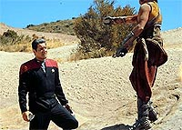
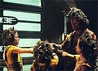
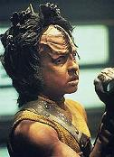
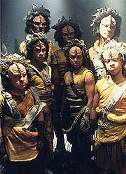
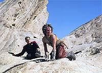

|
MANCHETE
DO EPISDIO
Episdio enfocado em Chakotay fala
mais sobre o modo de vida
Kazon
Episdio
anterior | Prximo
episdio
Sinopse:
Data Estelar: 49005.3.
Sozinho em uma nave auxiliar para realizar um ritual que comemora a
morte de seu pai, Chakotay acaba por adentrar no territrio dos
Kazon-Oglas e torna-se alvo de um jovem Kazon, de nome Kar, que v
na destruio da nave da Federao a oportunidade de ser
conhecido como um verdadeiro guerreiro.
 Chakotay
consegue destruir a nave do jovem Kazon e acaba por trazer Kar a
bordo de sua prpria nave auxiliar. Porm a derrota de Kar custar
a ele sua vida, quando uma enorme nave dos Kazon aborda a nave de
Chakotay e, sentencia Kar morte, por ter falhado em sua misso.
A execuo ser pelas mos do primeiro-oficial de Voyager.
O ex-Maquis no aceita a incumbncia e consegue fugir, com a ajuda
de Kar. Os dois acabam em uma lua usada pelos Kazons como rea de
treinamento de combate, at que um grupo composto por Kazons e
oficiais da Voyager encontra os dois.
 Kar
recupera a chance de se tornar um guerreiro ao reconhecer o lder
Kazon como um inimigo e mat-lo, provocando a "promoo"
de outro guerreiro ao posto de lder. O novo lder aceita Kar como
um legtimo Kazon e Chakotay devolvido Voyager.
Comentrios:
 "Initiations"
se prope a dar uma chance a Chakotay de desenvolver um pouco seu
personagem, alm de tentar revelar um pouco mais sobre os costumes
desta raa introduzida no primeiro ano da srie, os Kazons.
Infelizmente, apesar de ser um episdio capaz de entreter, pouco
sobra nele para ser refletido.
Primeiro porque o episdio trilha de forma perigosa a fronteira do
antropocentrismo. Algumas vezes parece claro, at para o menino
Kazon, que os costumes humanos demonstrados por Chakotay so
melhores que seus prprios costumes --uma viso totalmente errada.
Os aliengenas sempre brilham mais em Jornada quando agem de
forma aliengena --justamente lembrando que o "human way of
life" apenas uma das opes possveis. No o que
ocorre neste episdio, na maior parte do tempo. No h motivo
plausvel para que o menino acredite, aps poucas horas de convivncia
com Chakotay, que o modo de vida humano possa ser adequado. Tambm
inconveniente a atitude de Kar de trair seu povo e seus costumes
para fugir com o oficial da Federao --mesmo que seu objetivo
fosse obter seu reconhecimento como legtimo Kazon, j que a
cultura Kazon demonstrava no haver para ele uma segunda chance.
 Ainda
assim, os roteiristas conseguiram manter Kar, durante a maior parte
do episdio, coerente com seus condicionamentos e crenas,
cultivados durante toda a vida --o objetivo do menino, do comeo ao
fim, foi conseguir tornar-se um guerreiro Kazon reconhecido--,
embora, a rigor, essa fosse uma causa perdida. A perda de
caracterizao foi ocasional, mas ainda manteve alguma
estabilidade.
A escolha de Chakotay para o episdio tambm foi questionvel, e
o roteiro refletiu isso. Embora estivesse l justamente para
representar os costumes humanos (o que ele poderia fazer sem grandes
problemas), o comandante age como um verdadeiro f nmero um da
Federao e da Frota Estelar. Parece que a produo se esqueceu
completamente do fato de que h um ano, Chakotay era um rebelde
Maquis que combatia a Frota Estelar! Nesse ponto, a exaltao dele
Federao est totalmente fora de contexto.
 Durante
a histria, o resto da tripulao de Voyager aparece totalmente
esquecida. Nem Neelix, que deveria ser o maior beneficiado, consegue
brilhar, apesar do raciocnio afiado ao lidar com os Kazons.
No fim, resta apenas o aprendizado obtido sobre os costumes clnicos
dos Kazons. Infelizmente, nem isso pde evitar sua decadncia como
uma das espcies recorrentes mais desinteressantes de Jornada
nas Estrelas.
Citaes:
Kar - "You are not
welcome here. You're still the enemy, and if our paths cross again,
I will do my best to kill you."
("Voc no bem-vindo aqui. Voc ainda o inimigo, e se
nossos caminhos se cruzarem novamente, eu farei o mximo para mat-lo.")
Trivia:
 Kar interpretado por Aron Eisenberg,
mais conhecido como o Ferengi Nog em Deep Space Nine.
"Fizemos um tremendo erro em escolher Aron para o papel",
diz Michael Piller. "Sua voz facilmente indentificvel como
sendo a de Nog. Fora isso, sua performance foi excelente, mas quem
assiste aos dois programas (Voyager e Deep Space Nine)
deve ter achado estranho", conclui Piller.
Kar interpretado por Aron Eisenberg,
mais conhecido como o Ferengi Nog em Deep Space Nine.
"Fizemos um tremendo erro em escolher Aron para o papel",
diz Michael Piller. "Sua voz facilmente indentificvel como
sendo a de Nog. Fora isso, sua performance foi excelente, mas quem
assiste aos dois programas (Voyager e Deep Space Nine)
deve ter achado estranho", conclui Piller.
O episdio teve cenas filmadas nas
Rochas Vasquez, uma locao que j foi utilizada em Jornada
no episdio "Shore Leave", da srie original, alm
de servir como locao para a cidade de Bedrock no primeiro filme
para cinema dos "Flintstones".
"Initiations"
foi o primeiro episdio filmado depois da pausa ao final da
primeira temporada. Tambm o primeiro com a data estelar comeando
em 49000.
Ficha
tcnica:
Escrito por Kenneth Biller
Dirigido por Winrich Kolbe
Exibido em 04/09/1995
Produo: 021
Elenco:
Kate Mulgrew como
Kathryn Janeway
Robert Beltran como Chakotay
Roxann Biggs-Dawson como B'Elanna Torres
Robert Duncan McNeill como Tom Paris
Jennifer Lien como Kes
Ethan Phillips como Neelix
Robert Picardo como Doutor
Tim Russ como Tuvok
Garrett Wang como Harry Kim
Elenco convidado:
Aron Eisenberg como Kar
Patrick Kilpatrick como Razik
Tim de Zarn como Haliz
Episdio
anterior | Prximo
episdio
|